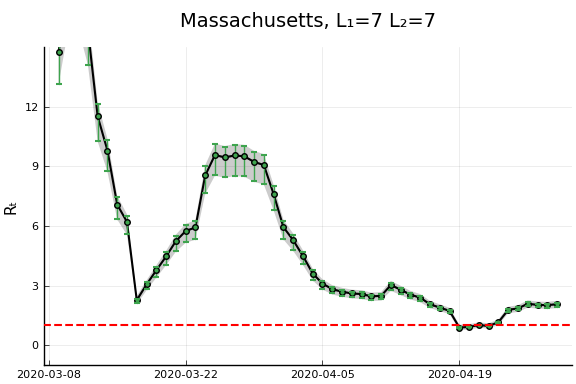
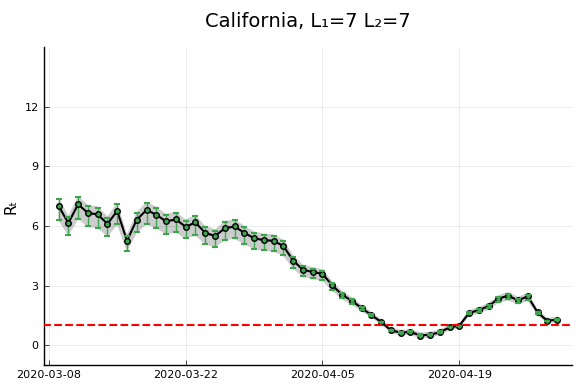
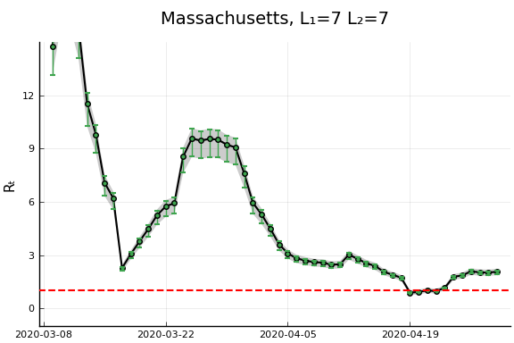
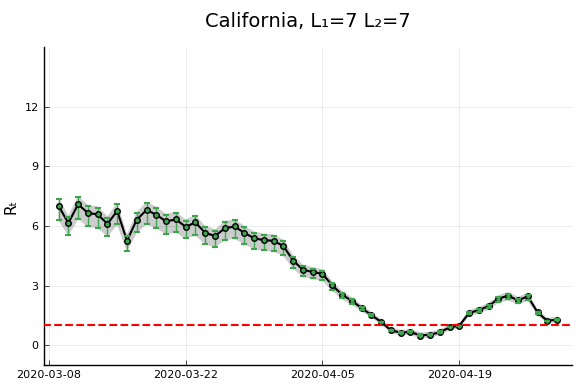
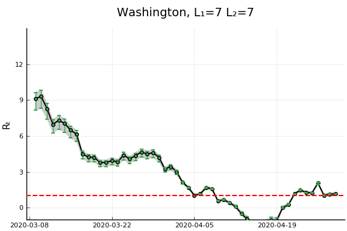
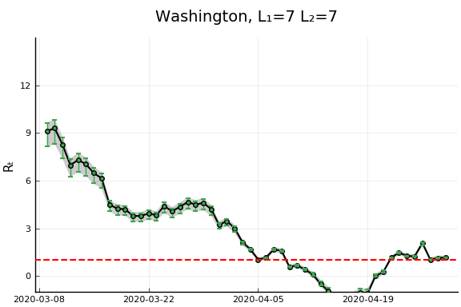

Results¶
## data prep
using CovidData
using CovidRt
using TransformVariables, Parameters, Plots, StatsPlots, DataFrames, Dates, LinearAlgebra, Distributions, Random, LogDensityProblems, DynamicHMC, MCMCChains, JLD2, Latexify
Plots.pyplot()
df = CovidData.statedata(policies=:indicators, fillmissingmobility=true)
pvars = [Symbol("Stay.at.home..shelter.in.place"),
#Symbol("State.of.emergency"),
Symbol("Date.closed.K.12.schools"),
Symbol("Closed.gyms"),
Symbol("Closed.movie.theaters"),
Symbol("Closed.day.cares"),
Symbol("Date.banned.visitors.to.nursing.homes"),
Symbol("Closed.non.essential.businesses"),
Symbol("Closed.restaurants.except.take.out")]
mvars = [:retail_and_recreation_percent_change_from_baseline,
:grocery_and_pharmacy_percent_change_from_baseline,
:parks_percent_change_from_baseline ,
:transit_stations_percent_change_from_baseline,
:workplaces_percent_change_from_baseline,
:residential_percent_change_from_baseline,
:percentchangebusinesses]
df[!,:logpopdens] = log.(df[!,Symbol("Population.density.per.square.miles")])
df[!,:weekend] = dayofweek.(df[!,:date]) .>= 6
x0vars=[:constant, :logpopdens,
Symbol("Percent.Unemployed..2018."),
Symbol("Percent.living.under.the.federal.poverty.line..2018."),
Symbol("Percent.at.risk.for.serious.illness.due.to.COVID")]
sdf = filter(x->x.fips<60, df)
sdf = sort(sdf, (:state, :date))
sdf[!,mvars] ./= 100
sdf[!,:constant] .= 1
xvars = vcat(x0vars, mvars);
Here, we will allow the initial and time varying mean of $R_{s,t}$ to depend on covariates.
We present estimates of $R_t$ with
and
for a variety of values of $L_1$ and $L_2$
reestimate=false
rlo=-1 #1 - eps(Float64)
rhi=1.2 #1+ eps(Float64)
K = length(xvars)
priors = (γ = truncated(Normal(1/7,1/7), 1/28, 1/1),
σR0 = truncated(Normal(1, 3), 0, Inf),
α0 = MvNormal(zeros(length(x0vars)), sqrt(10)), #truncated(Normal(1, 3), 0, Inf),
σR = truncated(Normal(0.25,1),0,Inf),
σk = truncated(Normal(0.1, 5), 0, Inf),
ρ = Uniform(rlo, rhi),
α = MvNormal(zeros(K), sqrt(10))
)
states_to_plot = ["New York", "New Jersey","Massachusetts","California",
"Georgia","Illinois","Michigan",
"Ohio","Wisconsin","Washington"]
warmup = default_warmup_stages(local_optimization=nothing,
stepsize_search=nothing,
init_steps=100, middle_steps=100,
terminating_steps=2*100,
doubling_stages=2, M=Symmetric)
for L1 in [3, 7]
for L2 in [7]
mdl = CovidRt.RtModel(sdf, Symbol("cases.nyt"), xvars, x0vars,
priors; L1=L1, L2=L2,
time0=r->(r[Symbol("cases.nyt")].>=5))
estfile = "rt_onlym_$(L1)_$(L2).jld2"
if !isfile(estfile) || reestimate
post = CovidRt.mcmc(mdl; iterations=2000, warmup=warmup)
@save estfile post
end
@load estfile post
cc = CovidRt.MCMCChain(post, xvars, x0vars)
println("## L₁ = $(L1), L₂ = $(L2)")
println()
#display(plot(cc))
println(latexify(DataFrame(describe(cc)[1]), env=:mdtable, latex=false, fmt=x->round(x, sigdigits=3)))
println(latexify(DataFrame(describe(cc)[2]), env=:mdtable, latex=false, fmt=x->round(x, sigdigits=3)))
states = mdl.id
S = length(states_to_plot)
figs = fill(plot(), S)
for (i,st) in enumerate(states_to_plot)
s = findfirst(states.==st)
figr = CovidRt.plotpostr(mdl.t[s],mdl.dlogk[s],post, mdl.X[s], mdl.X0[s])
l = @layout [a{.1h}; grid(1,1)]
figs[i] = plot(plot(annotation=(0.5,0.5, st*", L₁=$(L1) L₂=$(L2)"), framestyle = :none),
plot(figr, ylim=(-1,15)), layout=l)
display(figs[i])
end
end
end
L₁ = 3, L₂ = 7¶
| parameters | mean | std | naive_se | mcse | ess | r_hat |
|---|---|---|---|---|---|---|
| γ | 0.0394 | 0.00378 | 8.45e-5 | 0.000259 | 191.0 | 1.0 |
| σR0 | 3.9 | 0.487 | 0.0109 | 0.0438 | 118.0 | 1.01 |
| α0(constant) | 1.93 | 2.65 | 0.0593 | 0.283 | 94.9 | 1.0 |
| α0(logpopdens) | -0.495 | 0.549 | 0.0123 | 0.0808 | 43.9 | 1.0 |
| α0(Percent Unemployed 2018 ) | 1.15 | 0.892 | 0.02 | 0.126 | 41.2 | 1.02 |
| α0(Percent living under the federal poverty line 2018 ) | -0.258 | 0.399 | 0.00893 | 0.0511 | 39.0 | 1.01 |
| α0(Percent at risk for serious illness due to COVID) | 0.155 | 0.156 | 0.00349 | 0.0161 | 121.0 | 1.0 |
| σR | 1.5 | 0.128 | 0.00287 | 0.00876 | 188.0 | 1.0 |
| σk | 0.00346 | 0.00218 | 4.87e-5 | 0.000153 | 141.0 | 1.0 |
| ρ | 0.888 | 0.00862 | 0.000193 | 0.000372 | 464.0 | 1.01 |
| α(constant) | 3.3 | 1.93 | 0.0432 | 0.218 | 67.3 | 1.0 |
| α(logpopdens) | 0.43 | 0.229 | 0.00512 | 0.0251 | 91.3 | 1.0 |
| α(Percent Unemployed 2018 ) | -0.411 | 0.389 | 0.0087 | 0.055 | 40.1 | 1.0 |
| α(Percent living under the federal poverty line 2018 ) | 0.0618 | 0.163 | 0.00364 | 0.0195 | 69.8 | 1.0 |
| α(Percent at risk for serious illness due to COVID) | -0.0491 | 0.065 | 0.00145 | 0.00681 | 76.4 | 1.0 |
| α(retail and recreation percent change from baseline) | 0.963 | 0.949 | 0.0212 | 0.102 | 109.0 | 1.0 |
| α(grocery and pharmacy percent change from baseline) | 0.389 | 0.664 | 0.0148 | 0.0742 | 71.5 | 1.0 |
| α(parks percent change from baseline) | -0.0759 | 0.131 | 0.00293 | 0.0134 | 79.9 | 1.0 |
| α(transit stations percent change from baseline) | -1.2 | 0.979 | 0.0219 | 0.123 | 86.1 | 1.0 |
| α(workplaces percent change from baseline) | 0.772 | 0.956 | 0.0214 | 0.145 | 28.0 | 1.01 |
| α(residential percent change from baseline) | 0.408 | 1.44 | 0.0322 | 0.227 | 19.0 | 1.01 |
| α(percentchangebusinesses) | -0.102 | 0.756 | 0.0169 | 0.0917 | 69.8 | 1.01 |
| parameters | 2.5% | 25.0% | 50.0% | 75.0% | 97.5% |
|---|---|---|---|---|---|
| γ | 0.0358 | 0.0366 | 0.0382 | 0.041 | 0.0494 |
| σR0 | 2.92 | 3.59 | 3.91 | 4.21 | 4.86 |
| α0(constant) | -3.46 | 0.291 | 1.99 | 3.72 | 7.31 |
| α0(logpopdens) | -1.63 | -0.852 | -0.518 | -0.074 | 0.569 |
| α0(Percent Unemployed 2018 ) | -0.675 | 0.556 | 1.17 | 1.75 | 2.85 |
| α0(Percent living under the federal poverty line 2018 ) | -1.01 | -0.525 | -0.268 | 0.00153 | 0.577 |
| α0(Percent at risk for serious illness due to COVID) | -0.173 | 0.0554 | 0.155 | 0.259 | 0.454 |
| σR | 1.18 | 1.43 | 1.54 | 1.6 | 1.67 |
| σk | 0.000183 | 0.00173 | 0.00318 | 0.00491 | 0.00815 |
| ρ | 0.871 | 0.882 | 0.888 | 0.894 | 0.905 |
| α(constant) | -0.243 | 2.0 | 3.28 | 4.69 | 6.9 |
| α(logpopdens) | -0.00738 | 0.265 | 0.438 | 0.595 | 0.845 |
| α(Percent Unemployed 2018 ) | -1.15 | -0.679 | -0.436 | -0.15 | 0.435 |
| α(Percent living under the federal poverty line 2018 ) | -0.266 | -0.0391 | 0.0648 | 0.175 | 0.372 |
| α(Percent at risk for serious illness due to COVID) | -0.175 | -0.0937 | -0.0507 | -0.00409 | 0.073 |
| α(retail and recreation percent change from baseline) | -0.913 | 0.342 | 0.936 | 1.65 | 2.78 |
| α(grocery and pharmacy percent change from baseline) | -0.816 | -0.0806 | 0.359 | 0.864 | 1.68 |
| α(parks percent change from baseline) | -0.332 | -0.168 | -0.0747 | 0.0175 | 0.157 |
| α(transit stations percent change from baseline) | -3.02 | -1.9 | -1.24 | -0.513 | 0.765 |
| α(workplaces percent change from baseline) | -1.15 | 0.13 | 0.762 | 1.41 | 2.59 |
| α(residential percent change from baseline) | -2.06 | -0.696 | 0.339 | 1.5 | 3.24 |
| α(percentchangebusinesses) | -1.52 | -0.613 | -0.125 | 0.425 | 1.45 |
L₁ = 7, L₂ = 7¶
| parameters | mean | std | naive_se | mcse | ess | r_hat |
|---|---|---|---|---|---|---|
| γ | 0.0387 | 0.00296 | 6.62e-5 | 0.000194 | 161.0 | 1.03 |
| σR0 | 2.89 | 0.329 | 0.00735 | 0.0194 | 173.0 | 1.01 |
| α0(constant) | -0.509 | 2.74 | 0.0612 | 0.51 | 14.6 | 1.04 |
| α0(logpopdens) | -0.307 | 0.414 | 0.00925 | 0.0403 | 84.6 | 1.0 |
| α0(Percent Unemployed 2018 ) | 0.789 | 0.711 | 0.0159 | 0.0741 | 62.9 | 1.02 |
| α0(Percent living under the federal poverty line 2018 ) | -0.326 | 0.301 | 0.00674 | 0.0278 | 103.0 | 1.02 |
| α0(Percent at risk for serious illness due to COVID) | 0.263 | 0.118 | 0.00263 | 0.013 | 65.3 | 1.01 |
| σR | 0.9 | 0.0622 | 0.00139 | 0.00391 | 169.0 | 1.02 |
| σk | 0.00142 | 0.000791 | 1.77e-5 | 7.61e-5 | 105.0 | 1.0 |
| ρ | 0.939 | 0.00599 | 0.000134 | 0.000203 | 782.0 | 1.0 |
| α(constant) | 3.08 | 2.32 | 0.052 | 0.462 | 8.03 | 1.37 |
| α(logpopdens) | 0.559 | 0.275 | 0.00615 | 0.0296 | 73.3 | 1.02 |
| α(Percent Unemployed 2018 ) | -0.429 | 0.416 | 0.00929 | 0.0414 | 73.0 | 1.0 |
| α(Percent living under the federal poverty line 2018 ) | 0.112 | 0.18 | 0.00403 | 0.0168 | 105.0 | 1.0 |
| α(Percent at risk for serious illness due to COVID) | -0.104 | 0.0846 | 0.00189 | 0.0135 | 10.1 | 1.15 |
| α(retail and recreation percent change from baseline) | 0.602 | 0.58 | 0.013 | 0.0754 | 59.8 | 1.01 |
| α(grocery and pharmacy percent change from baseline) | -0.766 | 0.426 | 0.00952 | 0.0422 | 99.2 | 1.01 |
| α(parks percent change from baseline) | 0.0432 | 0.0793 | 0.00177 | 0.00773 | 73.3 | 1.02 |
| α(transit stations percent change from baseline) | -0.125 | 0.507 | 0.0113 | 0.0629 | 43.6 | 1.01 |
| α(workplaces percent change from baseline) | -0.0178 | 0.575 | 0.0129 | 0.0637 | 64.6 | 1.01 |
| α(residential percent change from baseline) | -0.139 | 0.927 | 0.0207 | 0.0948 | 62.7 | 1.01 |
| α(percentchangebusinesses) | 0.457 | 0.477 | 0.0107 | 0.0414 | 109.0 | 1.0 |
| parameters | 2.5% | 25.0% | 50.0% | 75.0% | 97.5% |
|---|---|---|---|---|---|
| γ | 0.0358 | 0.0366 | 0.0378 | 0.04 | 0.0465 |
| σR0 | 2.23 | 2.69 | 2.9 | 3.11 | 3.55 |
| α0(constant) | -5.95 | -2.44 | -0.362 | 1.42 | 4.76 |
| α0(logpopdens) | -1.15 | -0.592 | -0.294 | -0.0481 | 0.564 |
| α0(Percent Unemployed 2018 ) | -0.698 | 0.375 | 0.809 | 1.26 | 2.07 |
| α0(Percent living under the federal poverty line 2018 ) | -0.908 | -0.521 | -0.328 | -0.116 | 0.272 |
| α0(Percent at risk for serious illness due to COVID) | 0.021 | 0.187 | 0.261 | 0.346 | 0.479 |
| σR | 0.744 | 0.867 | 0.916 | 0.946 | 0.976 |
| σk | 0.000219 | 0.000794 | 0.00134 | 0.00193 | 0.00324 |
| ρ | 0.928 | 0.935 | 0.939 | 0.944 | 0.95 |
| α(constant) | -0.958 | 1.33 | 2.91 | 4.8 | 7.96 |
| α(logpopdens) | 0.0253 | 0.361 | 0.557 | 0.76 | 1.08 |
| α(Percent Unemployed 2018 ) | -1.18 | -0.727 | -0.421 | -0.152 | 0.376 |
| α(Percent living under the federal poverty line 2018 ) | -0.242 | -0.0059 | 0.111 | 0.239 | 0.459 |
| α(Percent at risk for serious illness due to COVID) | -0.276 | -0.164 | -0.103 | -0.0421 | 0.0494 |
| α(retail and recreation percent change from baseline) | -0.513 | 0.206 | 0.6 | 0.966 | 1.76 |
| α(grocery and pharmacy percent change from baseline) | -1.63 | -1.04 | -0.758 | -0.468 | 0.0631 |
| α(parks percent change from baseline) | -0.124 | -0.00449 | 0.0471 | 0.0967 | 0.191 |
| α(transit stations percent change from baseline) | -1.19 | -0.467 | -0.107 | 0.212 | 0.794 |
| α(workplaces percent change from baseline) | -1.18 | -0.397 | 0.00054 | 0.38 | 1.1 |
| α(residential percent change from baseline) | -1.99 | -0.781 | -0.129 | 0.495 | 1.65 |
| α(percentchangebusinesses) | -0.482 | 0.133 | 0.476 | 0.776 | 1.39 |


  
 


 
